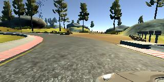
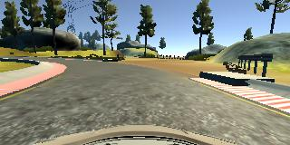

Behavioral Cloning Project
The goals / steps of this project are the following:
My project includes the following files:
Using the Udacity provided simulator and my drive.py file, the car can be driven autonomously around the track by executing
The model.py file contains the code for training and saving the convolution neural network. The file shows the pipeline I used for training and validating the model, and it contains comments to explain how the code works.
My model consists of a convolution neural network with three 5x5 and two 3x3 filter sizes and depths between 24 and 64 (model.py lines 81-96)
The model includes RELU layers to introduce nonlinearity (code line 86-96), and the data is normalized in the model using a Keras lambda layer (code line 84).
The model contains dropout layers in order to reduce overfitting (model.py lines 93).
The model was trained and validated on different data sets to ensure that the model was not overfitting (code line 101-105). The model was tested by running it through the simulator and ensuring that the vehicle could stay on the track.
Training data was chosen to keep the vehicle driving on the road. I used a combination of center lane driving, recovering from the left and right sides of the road, and driving counter-clockwise.
The overall strategy for deriving a model architecture was having a good starting point, and improve basd on output by iteratively experimenting.
My first step was to use a convolution neural network model similar to the one presented in section 15 (Even more powerful network). I thought this model might be appropriate because in the video it gives relatively good output as starting point.
In order to gauge how well the model was working, I split my image and steering angle data into a training and validation set (model.py line 16). I found that my first model had a low mean squared error on the training set but a high mean squared error on the validation set. This implied that the model was overfitting.
To combat the overfitting, I modified the model by adding dropout with keep_prob=0.5 after first fully connected layer, so mean squared error on both sets decreased to an acceptable level.
At the end of the process, the vehicle is able to drive autonomously around the track without leaving the road.
The final model architecture (model.py lines 81-96) consisted of a convolution neural network with the following visualization.(note: visualizing the architecture is optional according to the project rubric)
_________________________________________________________________
Layer (type) Output Shape Param #
=================================================================
cropping2d_1 (Cropping2D) (None, 80, 320, 3) 0
_________________________________________________________________
lambda_1 (Lambda) (None, 80, 320, 3) 0
_________________________________________________________________
conv2d_1 (Conv2D) (None, 38, 158, 24) 1824
__5x5, stride 2x2, VALID_________________________________________
conv2d_2 (Conv2D) (None, 17, 77, 36) 21636
__5x5, stride 2x2, VALID_________________________________________
conv2d_3 (Conv2D) (None, 7, 37, 48) 43248
__5x5, stride 2x2, VALID_________________________________________
conv2d_4 (Conv2D) (None, 5, 35, 64) 27712
__3x3, stride 1x1, VALID_________________________________________
conv2d_5 (Conv2D) (None, 3, 33, 64) 36928
__3x3, stride 1x1, VALID_________________________________________
flatten_1 (Flatten) (None, 6336) 0
_________________________________________________________________
dense_1 (Dense) (None, 100) 633700
_________________________________________________________________
dropout_1 (Dropout) (None, 100) 0
_________________________________________________________________
dense_2 (Dense) (None, 50) 5050
_________________________________________________________________
dense_3 (Dense) (None, 10) 510
_________________________________________________________________
dense_4 (Dense) (None, 1) 11
=================================================================
Total params: 770,619
Trainable params: 770,619
Non-trainable params: 0
I used the provided sample dataset as I looked through all the images in the set. I found out it contains several laps of track 1, including strategies such as center lane driving, recovering from the left side and right sides of the road back to center, and driving in opposite direction. It covers all approaches I can come up with, so I do not bother creating my own data.
Here is an example image of center lane driving:
These images show recovering from the left side and right side of the road:
I also take advantage of the multiple cameras on the car, so center, left, and right images are added to dataset. Here is an example of 3 angles for one timestamp:

To augment the data set, I also flipped images and angles. For example, here is an image that has then been flipped:

After the collection process, I had 48,216 data points. I preprocessed them by first cropping 60 pixels from top and 20 pixels from bottom of each image, as those parts of image are not useful in decision-making of the model. Here is an example of before and after cropping:

After cropping I did normalization in the model using a Keras lambda layer (model.py line 84).
I used this training data for training the model. The validation set helped determine if the model was over or under fitting. The number of epochs was 5 as there is minor improvement after 5th epoch. I used an adam optimizer so that manually training the learning rate wasn't necessary.